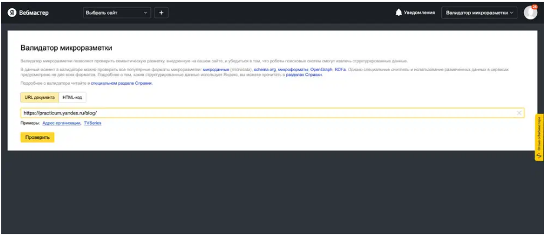
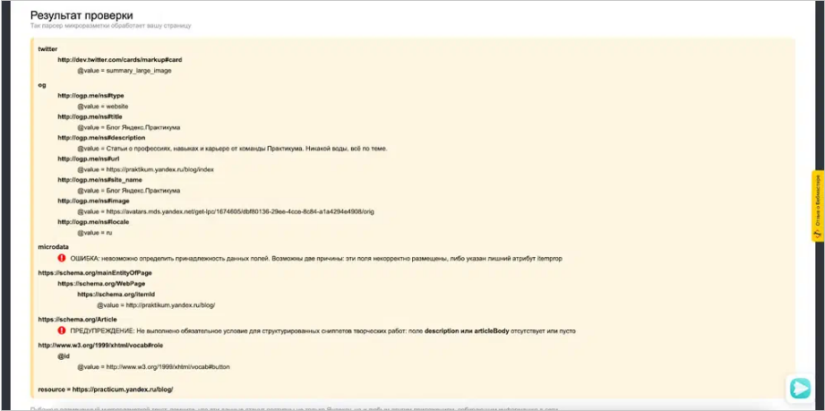

Проверка микроразметки на наличие ошибок
С помощью валидатора можно проверить, выполняет ли разметка свою функцию: помогает ли поисковым системам распознавать данные без ошибок. Например, в Яндексе микроразметку проверяют в Вебмастере: туда копируют фрагмент кода или ссылку на ресурс. Если есть ошибки, программа автоматически подсветит их красным цветом и выдаст комментарий, где будут указаны возможные причины. Тестирование занимает несколько секунд.
В Яндекс Вебмастере на странице «Микроразметка» нужно ввести ссылку на страницу или фрагмент кода и запустить проверку
Опираясь на подсказки, можно быстро починить микроразметку
Со всей необходимой документацией о текущих стандартах микроразметки можно ознакомиться на отдельной help-странице от Яндекса: там много полезной информации для начинающих вебмастеров.